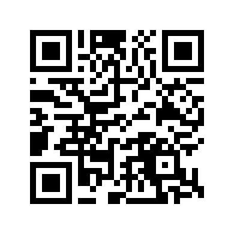

Privatumas nėra funkcija — tai tavo teisė.
➡️ Čia ne produktas. Čia principas.
Mes nesaugome log'ų, neturime tavo duomenų ir nekontroliuojame tavo srauto.
Tu gauni įrenginį, kuriuo gali visiškai pasitikėti — jis tavo, jis tavo kontrolėje.
🔐 Ką tu gauni:
- Asmeninį VPN serverį (Ubuntu + WireGuard)
- Nėra debesų, nėra trečiųjų šalių
- Fizinis įrenginys tavo rankose
- Jokių naudotojų vardų ar slaptažodžių — tik tavo raktas
⚡ Kaip tai veikia:
- Susisiek per saugų kanalą
- Gauk savo VPN serverį
- Įjunk, naudok ir pamiršk rūpesčius
⚖️ Teisinė pusė:
Mes neteikiame VPN paslaugų — mes tiekiame įrangą.
Visa atsakomybė ir kontrolė yra tavo rankose.
📩 Kontaktas:
El. paštas: admin@safestack.tech

🤝 Mūsų Pasitikėjimo Principai
Mes nesame įmonė, kuri ieško pelno. Mes esame žmonės, kurie siekia privatumo.
Mes nesame paslaugos tiekėjai. Mes esame kontrolės grąžintojai.
Mes netikime marketingu. Mes tikime praktika.
🚫 Nepriklausomi nuo įstatymų spaudimo
- Mes nesaugome jūsų duomenų. Net jei kas nors reikalautų – mes jų tiesiog neturime.
- Mes nevaldome serverio, todėl niekas negali „prisijungti“ ar „pažiūrėti“ be jūsų žinios.
- Mes neturime vartotojų bazės – todėl nėra ką sekti ar nutekinti.
Jei neturi ką atiduoti – niekas iš tavęs ir neatims.
⚖️ Mes nepasirašome įsakymų – mes pasirašome atsakomybę
- Mes nesame VPN tiekėjas.
- Mes nenaudojame cloud serverių, log'ų ar trečiųjų šalių API.
- Mes nesame susieti su jokiais korporaciniais ar valstybiniais subjektais.
Mūsų pažadas paprastas: duodame tau tai, ką duotume sau.
🔍 Kodėl mumis galima pasitikėti?
- Viską, ką sukūrėme, gali patikrinti pats – jokių „black box“.
- Nieko nedarome fone. Viskas – tavo akivaizdoje.
- Net jei mus spaustų – neturime ką parodyti.
Pasitikėjimas gimsta ne iš žodžių – o iš architektūros. Ir mūsų architektūra sako: tu esi šeimininkas. Visiškai.